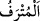

değil, bilakis bunlar hakkında onlar tuzağa düşürülmüşlerdir. Ya da onların
tuzaklarından murad, emir ile beraber olan ve yerine getirilmeye çağrılan teşvik, tehdîd
ve benzeri durumlardır.
“Artık azabı gördüklerinde, için için yanarlar;” yâni her iki grup (zayıf sayılanlar ve
büyüklük taslayanlar), pişmanlığın kendilerine fayda vermediği bir zamanda yaptıkları
sapma ve saptırmaya duydukları pişmanlığı gizlerler, ayıplanıp kınanma endişesiyle her
biri diğerinden saklarlar. Ya da pişmanlıklarını açığa vururlar. Çünkü “
” kelimesi
zıd anlamlı kelimelerdendir.
Nedâmet, kaçırılan bir işten dolayı duyulan hasret, pişmanlıktır.
“Biz de inkâr edenlerin boyunlarına demir halkalar takarız.” Yâni kıyâmet günü
uyanlardan ve uyulanlardan dünyada hak kendilerine geldiği zaman onu inkâr edenlerin
boyunlarına demir halkalar takarız. Burada gelecek zamanın geçmiş zaman lafzıyla
getirilmesi, onun kesin olarak gerçekleşecek olması bakımındandır. “Onların
boyunlarına” denilerek zamir kullanacak yerde “inkâr edenlerin boyunlarına”
buyrularak ismin açıkça kullanılması, onları açıktan yüksek sesle yermek ve onların
boyunlarına zincir takılmasının sebebine dikkat çekmek içindir.
“Onlar ancak” dünyada “yapmakta oldukları” küfür ve “günahları yüzünden
cezalandırılırlar.” Onlar dünyada kendilerini bağladıklarından, cin ve insanlardan
şeytanların süslemeleriyle kendilerini îmandan men’ettiklerinden âhirette zincirlerle
bağlanmakla cezâlandırılırlar.
Nisâbü’l-ihtisâb’da der ki: “Suç işleyip hiyânetleri kesin olarak sâbit olduktan sonra
çarşı esnafının boynuna halka takılmasının dayanağı, Hassâf’ın, Edebü’l-kâdî’sinde
zikredilen “yalan şâhidlikte bulunan kişinin boynuna halka takılır” ifâdesidir. Bu halka
ağaçtan yapılmış, zil bağlanmış bir külah/başlık olup suçluların başına giydirilir. Hattâ
bu durumun insanlar arasında teşhir ve îlân edilmesi için halk arasında dolaştırılması da
câizdir.
34. Biz hangi ülkeye bir uyarıcı göndermişsek mutlaka oranın varlıklı ve şımarık
kişileri: “Biz, size gönderilmiş olan şeyi inkâr ediyoruz.” demişlerdir.
“Biz hangi ülkeye” köye ve şehre onları azapla uyaran bir peygamber “bir uyarıcı
göndermişsek mutlaka oranın varlıklı ve şımarık kişileri” o ülkenin mütekebbir ve
dünya nimetleri içerisinde yüzen liderleri peygamberlerine: “Biz, size gönderilmiş
olan şeyi” sizin iddiâ ettiğiniz tevhid ve îmânı “inkâr ediyoruz.” demişlerdir.”
“
” nimetlere erişmiş, geniş geçim imkânları ve nimetler elde etmiş demektir.
Nimette genişlik demek olan “
”dendir.
Bu âyet Hz. Peygamber (s.a.)’i tesellî etmek için gelmiştir. Yâni, Ey Muhammed